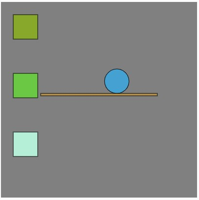

438 Final Project Proposal Prototype
Overview and Usage
My final project is a game using the p5 js library. My game can be played here.
Development Process
- I began with just the ball and a single rising platform. This was an idea I found from the examples on the p5 play website.
- I added rising squares that would be turned into platforms. 
- I changed the shape of the squares into skinny rectangles to look more like a platform.
- I added a counter to keep track of the score and a face for the ball. I also added a stretch effect so the ball will be animated when moving.
- I added a start and end screen with buttons.
- I created a Firebase database to store high scores. I hooked it up to my game to show the contents of the database to the player

Issue Deep-Dive: Description of an issue you ran into, and the steps you took to resolve it
I make a file called sketch.js which contained code for my game. I also had another js file called index.js with some functions that connect to my Firebase backend. I didn't know how to send information like the score which is in my sketch.js file to my index.js file which contained the functions I needed to send data into my database. I went to Hannah's office hours and she helped me resolve this problem by attaching certain functions in my index.js file to the window. This made them accessible from my sketch.js so I was able to connect my game data to my database.
Ideas and Future Work: Ideas for what features you might like to add to your project in the future (can be bullet points)
- I need to debug my code, sometimes the game will just freeze and I'm not sure what the problem is.
- The counter right now is just measuring the number of platforms that have appeared, I want to change it to measure the time.
- The game is pretty straightforward. I want to make it harder by increasing the speed and vary the size of the platforms.
Kudos: Links to any particularly useful resources you found during your project. You should also credit any classmates or friends who helped you.
- Kudos to Hannah for helping me with my issue above.
- The p5 documentation was super useful too.